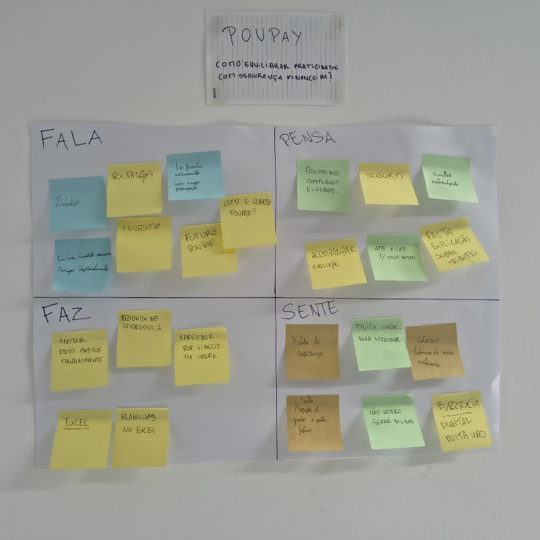

Poupay.
Consciência financeira, educação prática e investimentos para a juventude.
Uma solução digital pensada para eliminar a sobrecarga cognitiva na gestão do dinheiro, estimular o hábito de poupar e descomplicar o mundo dos investimentos sem burocracia ou termos inacessíveis.
Controle sem Fricção
Automação de extrato para combater o abandono precoce das planilhas manuais.
Privacidade Transparente
Soberania integral dos dados do usuário, eliminando a desconfiança com apps bancários.
Metas Tangíveis
Separação em potes para reserva de emergência sem infantilização ou mecânicas punitivas.
Matriz CSD Consolidada
Cruzamento entre dados empíricos de mercado (Serasa, SPC Brasil, CVM, Banco Central) e as suposições e dúvidas de design da equipe.
55% dos jovens da Geração Z (18 a 29 anos) já são os principais responsáveis pela gestão de suas finanças.
Fonte: Pesquisa Serasa / Opinion Box (2.923 jovens). serasa.com.br/imprensa ↗Apenas 10% dos jovens desta geração relatam ter tido acesso significativo à educação financeira no ambiente familiar.
Fonte: Levantamento Serasa / Opinion Box. serasa.com.br/imprensa ↗Cerca de 47% dos jovens da Geração Z declaram não realizar qualquer tipo de controle regular sobre entradas e saídas.
Fonte: Pesquisa CNDL / SPC Brasil (todas as capitais). site.cndl.org.br/pesquisa ↗84% dos jovens pensam constantemente em suas finanças e 67% sentem aflição ou ansiedade quanto ao futuro financeiro.
Fonte: Consumidor Moderno / Opinion Box. consumidormoderno.com.br ↗Redes sociais e criadores de conteúdo financeiro (finfluencers) tornaram-se a principal fonte de aprendizado.
Fonte: CVM / ANBIMA (Estudo Regulatório Finfluencers). conteudos.cvm.gov.br ↗- Jovens gostam de soluções "gamificadas" com pontuações e recompensas lúdicas.
- Acredita-se que o jovem não investe por achar que precisa de muito dinheiro para começar.
- Supõe-se que a Geração Z prioriza o orçamento em experiências imediatas (viagens, eventos, lazer) em vez de acúmulo de patrimônio físico.
- Supõe-se que os jovens têm maior inclinação a adotar assistentes virtuais/IA do que utilizar planilhas tradicionais ou anotações manuais.
- Supõe-se que a ascensão de carreiras com renda variável (freelancers, autonomia) é um dos maiores obstáculos à poupança contínua.
- Supõe-se que os jovens evitam interações físicas/formais com instituições financeiras e migram para experiências 100% digitais e fluidas.
- Quem são nossos concorrentes diretos, indiretos e inspiradores?
- Há interesse genuíno desse público-alvo para começar a investir?
- Qual o perfil socioeconômico predominante do nosso público universitário?
- Como manter a constância do jovem no controle financeiro sem gerar estresse?
- De que forma pagamentos instantâneos (Pix) influenciam a tomada de decisão impulsiva?
- Quais métodos e ferramentas o jovem utiliza hoje para controlar despesas?
- Qual o principal obstáculo percebido com relação a apps financeiros?
- Onde está a maior lacuna didática no aprendizado de investimentos?
- Qual o objetivo financeiro primário antes de buscar grandes rentabilidades?
Mapa de Empatia

🗣️️ O que FALA
Declarações💭 O que PENSA
Modelos mentais🏃 O que FAZ
Ações reais❤️ O que SENTE
EmoçõesAnálise Competitiva (9 Soluções)
Mapeamento sistemático de soluções diretas, indiretas e produtos inspiradores de engajamento para identificar oportunidades únicas para o Poupay.
// Concorrentes Diretos Focados em Jovens
Mozper (Brasil)
App + CartãoApp + cartão de débito Visa controlado pelos pais, com mesada e tarefas remuneradas.
+ Prós: Modos pai/filho bem delineados; linguagem não infantilizada.
- Contras: Mensalidade de R$ 25/mês e sem autonomia de cadastro para o jovem.
Mooney
EdfintechEdfintech gamificada com mascotes ("Mooners"), cofrinhos para metas e missões.
+ Prós: Forte conexão emocional com mascotes e feedback lúdico.
- Contras: Estética excessivamente infantilizada para universitários.
NextJoy (Bradesco)
Conta MenoresConta gratuita de 0 a 17 anos com personagens Disney e mesada programada.
+ Prós: Apelo visual forte e mesada programada automática.
- Contras: Responsável deve ser correntista; transferências restritas.
C6 Yellow (C6 Bank)
Investimento JovemConta digital com Pix, metas de economia e aplicação direta em CDB diário.
+ Prós: Personalização visual e investimento real em CDB desde cedo.
- Contras: Conteúdo educativo superficial com viés estritamente comercial.
Greenlight (EUA)
Líder GlobalPioneiro global na divisão de potes: Spend, Save, Give e Invest com limites rígidos.
+ Prós: Potes com propósito evidente que educam sobre alocação.
- Contras: Modelo 100% pago sem plano gratuito; excesso de funções.
União dos Três Pilares
Nenhum concorrente direto une com equilíbrio: automação de extrato sem custo + educação didática contextual + metas de reserva sem infantilização.
// Concorrentes Indiretos
Mobills / Organizze (Apps Tradicionais)
Interfaces completas com gráficos, porém com tom frio, barreiras de assinatura e ausência de educação para iniciantes.
💡 Diretriz: Gráficos de leitura imediata sem travar recursos essenciais.Redes Sociais & Planilhas Manuais (Instagram / TikTok)
Conteúdo visual dinâmico em vídeos rápidos, porém planilhas geram abandono imediato por fadiga de digitação manual.
💡 Diretriz: Pílulas de conteúdo curtas integradas ao fluxo da aplicação.// Inspiradores de Engajamento
Duolingo (Hábitos e Retenção)
Referência em rotina diária voluntária, mas mecânicas punitivas (perder vidas/ofensivas) causam ansiedade quando aplicadas a dinheiro.
💡 Diretriz: Reforço positivo diário sem punições emocionais sobre saldo.Strava (Reconhecimento de Conquistas)
Excelente sensação de evolução em metas pessoais, mas expor números absolutos de dinheiro geraria constrangimento.
💡 Diretriz: Conquistas visuais e celebração de metas preservando quantias reais.Questionário com Usuários
Adoção Zero Prévia
Nunca usaram apps dedicados de finanças por desconfiança na segurança.
Checagem Frequente
Verificam saldo frequentemente no banco, mas atuam de modo meramente reativo.
Gasto Fora da Meta
Admitiram gastar além do planejado com pequenas compras diárias no Pix.
Necessidade de Aprender
Avaliaram como alta a urgência de receber educação prática sobre finanças.
// Hierarquia de Recursos Solicitados
| Funcionalidade | Aprovação | Média (0-4) | Relevância de Requisito |
|---|---|---|---|
| Gráficos de Gastos | 97,1% | 3,60 | Prioridade Máxima (Visão imediata) |
| Alertas de Limite | 91,4% | 3,37 | Avisos proativos antes do estouro |
| Registro Automático | 88,6% | 3,40 | Elimina a digitação manual |
| Metas de Economia | 88,6% | 3,20 | Potes visuais de reserva |
| Dicas Educativas | 80,0% | 3,03 | Pílulas contextuais sobre taxas |
| Gamificação Lúdica | 37,1% | 2,06 | Rejeitada (62,9% indiferentes) |
Desmistificando a Gamificação
A suposição inicial de que jovens demandavam jogos e mascotes virtuais foi refutada numericamente. O público universitário busca dashboards claros, visualização imediata e praticidade; o valor percebido está em barras de progresso reais e clareza sobre o saldo.
Objetivos dos Jovens Mapeados
Relatório do Grupo Focal
Análise qualitativa e transcrição consolidada da sessão conduzida com usuários reais, aprofundando comportamentos, modelos mentais e requisitos de IHC.
// Por que o Grupo Focal?
Justificativa Metodológica de IHC
Segundo Barbosa e Silva (2010), o grupo focal é especialmente indicado para identificar a multiplicidade de opiniões, modelos mentais conflitantes e a dinâmica de debate espontâneo entre pares. Em temas financeiros — historicamente cercados por desconforto —, a conversa coletiva permitiu que os entrevistados expusessem com naturalidade seus hábitos informais, gastos por impulso e frustrações reais com ferramentas anteriores.
A técnica cumpriu o papel de **triangulação qualitativa**, permitindo entender o "porquê" dos números obtidos no questionário quantitativo.
// Critérios de Recrutamento
Por que Chamamos Estes Participantes?
Adotamos a estratégia de amostragem intencional por variação máxima de maturidade financeira dentro da faixa universitária (18 a 24 anos). Em vez de perfis idênticos, selecionamos propositalmente dois extremos de modelo mental financeiro:
- O Jovem Pragmático / Controle de Cabeça (P1): Perfil representativo da maioria absoluta do questionário (85,7% sem app dedicado), que opera com foco em liquidez imediata, controle mental e sofre forte atrito com leitura de textos técnicos.
- O Jovem Investidor / Analítico (P2): Usuário com inserção profissional na área financeira/mercado, que já poupa porcentagens fixas (30% a 50%), usa o app da XP e caderno, demandando comparadores visuais e alta segurança de custódia.
// Perfil Real dos Participantes Entrevistados
Participante 1 (P1)
Perfil Pragmático • Controle de Cabeça & ExtratoComportamento Financeiro: Não verifica entradas e saídas no dia a dia; calcula o saldo de cabeça após gastar. Define como teto gastar no máximo a metade do que tem na conta para manter reserva de emergência.
Gargalos e Dores: Gastos acumulados com delivery, alimentação fora de casa (fast food) e transporte por aplicativo (Uber). Sente que o pagamento por aproximação não dá a dimensão do dinheiro saindo da conta.
Adoção Tecnológica: Tolerância zero para lançar comprovantes na mão; aprende melhor por vídeos curtos de 2 minutos (estilo Reels); rejeita textos longos e termos técnicos difíceis.
Participante 2 (P2)
Perfil Analítico • Trabalhador da Área & InvestidorComportamento Financeiro: Separa de 30% a 50% da renda logo no início do mês para investimentos (trata como parcela fixa adiantada). Faz contas diárias pelo app do banco (XP) e anotações estruturadas em caderno.
Gargalos e Dores: Já utilizou planilhas para cobrança compartilhada no cartão, mas desistiu por falta de tempo para ajustar fórmulas. Sofre com microgastos acumulados em Uber e parcelamento excessivo.
Adoção Tecnológica: Domina renda fixa e títulos públicos; tem curiosidade em ações; aceitaria subir extrato semanalmente; prefere gráficos de barras comparativas (estilo League of Legends).
// Procedimentos Éticos e TCLE
A atividade de campo obedeceu rigorosamente aos preceitos éticos em pesquisa de IHC (Barbosa e Silva, 2010):
- Termo de Consentimento Livre e Esclarecido (TCLE): Ambos os entrevistados assinaram digitalmente o TCLE antes da gravação em áudio.
- Anonimato e Não-rastreabilidade: As identidades reais foram codificadas em Participante 1 e Participante 2, preservando o sigilo de dados nominais.
- Direito de Recusa e Desistência: Foi garantida liberdade plena para interromper a participação ou se abster de responder qualquer questão sem ônus.
- Proteção de Dados Sensíveis: Não foram coletados saldos reais de contas, senhas de acesso bancário ou números de cartões.
// Método: Análise Temática de Conteúdo
O processamento dos dados coletados seguiu as etapas clássicas da Análise Temática de Conteúdo (Bardin; Braun & Clarke):
- Transcrição e Familiarização: Transcrição e limpeza dos turnos de fala da gravação de áudio de 52 minutos.
- Codificação Aberta: Geração de códigos primários como "dor do microgasto em Uber/comida", "ilusão de poder na aproximação", "fadiga de fórmulas em planilhas" e "aversão a gamificação lúdica".
- Mapeamento dos Temas Centrais: Consolidação dos 5 temas que definem diretamente os requisitos de IHC da solução.
// Síntese dos Eixos Temáticos Investigados
A Ilusão da Aproximação
O pagamento por aproximação no cartão ou celular remove a fricção da compra e cria a sensação de "se sentir poderoso". Como não se visualiza o saldo caindo no ato, o dinheiro sai sem controle perceptivo.
A Armadilha dos Microgastos
Compras de alto valor (R$ 100 a R$ 300) são facilmente lembradas. O verdadeiro descompasso do fim de mês decorre de corridas curtas de Uber, lanches rápidos, compras parceladas acumuladas e fast food.
Morte da Digitação Manual
Planilhas manuais foram abandonadas pela sobrecarga de atualizar e ajustar fórmulas após um dia cansativo. O jovem tolera subir o extrato uma vez por semana ou prefere sincronização direta sem trabalho manual.
Gráficos de Barras > Pizza
Rejeição aos gráficos de pizza convencionais. Os usuários preferem listas com faixas de cores (cinza para seguro, vermelho para alerta) e barras comparativas (estilo estatísticas do *League of Legends*).
Didática em Vídeos de 2 Minutos
Textos longos geram preguiça e fazem o usuário desistir de investir. O aprendizado ideal ocorre em formato de *Reels/TikTok* (1 a 2 minutos) com criadores que traduzem jargões em linguagem simples.
Rejeição à Gamificação Lúdica
Classificada como "infantil" ou "irrelevante". O jovem universitário não quer pontinhos ou mascote virtual em finanças; recompensas válidas são milhas, cashback real ou desbloqueio de cursos avançados.
// Falas Literais em Destaque na Transcrição
"Você só vai gastando e não vê o saldo diminuindo, esse é o problema. A gente vai comer fora com namorada, não vai vendo o valor, e quando vê no final do mês já não tem nada."
"Desisti da planilha mais pelo tempo. Ficar montando e ajustando fórmula na mão cansa. Se aproximou o cartão e já caísse automático numa tabelinha, era só bater o olho."
"Cuidar de dinheiro já é sério. Ninguém quer perder tempo brincando com bichinho virtual ou foguinho; se quiser jogar, a pessoa abre o Discord ou o videogame."
// Cruzamento: Resultados Quantitativos vs. Evidências Empíricas do Grupo Focal
| Dimensão Investigada | Dado do Questionário Quantitativo | Evidência Empírica do Grupo Focal Real |
|---|---|---|
| Consulta de Saldo | 74,3% verificam com frequência | Ambos abrem o app do banco com frequência diária, mas confirmaram que a consulta é passiva (apenas para ver se têm margem para o almoço do dia), sem planejamento ativo. |
| Estouros de Orçamento | 47,1% gastam além do planejado | Os entrevistados apontaram como culpados o acúmulo de Ubers de R$ 10-20, lanches de fast food e o perigo do cartão por aproximação, que oculta a percepção do saldo saindo. |
| Registro Automático | 88,6% consideram importante | P1 tem tolerância zero para digitação manual após o dia de estudo/estágio, e P2 abandonou planilhas por falta de tempo para ajustar fórmulas. Exigem automação no extrato. |
| Gráficos de Gastos | 97,1% consideram importante | Rejeição ao gráfico de pizza tradicional. Preferem listas com alertas em faixas de cor (cinza para seguro, vermelho para estouro) e gráficos de barras comparativas (estilo *LoL*). |
| Educação Financeira | Média 4,46/5 na necessidade de aprender | P1 afirmou que a escola não ensina finanças e que textos longos dão preguiça. Pede vídeos curtos de 2 minutos inspirados em criadores descontraídos de redes sociais. |
| Gamificação / Recompensas | 62,9% rejeitaram ou foram indiferentes | Ambos afirmaram que "moedinhas", mascotes ou "foguinho do Duolingo" não funcionam para dinheiro. Se houver benefício, deve ser real (cashback, milhas ou cursos avançados). |
// Requisitos de IHC e Diretrizes de Design da Solução
Eliminar qualquer necessidade de preenchimento manual de despesas ou notas fiscais.
Adotar barras de gastos comparativas (cinza no limite seguro, vermelho em alerta de estouro).
Exibir notificações preventivas de saldo e alertas antes de atingir o limite orçamentário da semana.
Ocultar o dinheiro guardado da tela inicial para evitar a tentação de gastar a reserva no dia a dia.
Substituir manuais densos por microconteúdos dinâmicos explicando tributos e investimentos básicos.
Exibir de forma evidente no onboarding as garantias de segurança auditadas pelo Banco Central.
Uso de Inteligência Artificial no Projeto
Transparência sobre como ferramentas de Modelos de Linguagem (LLMs) foram empregadas como copilotos na análise de dados e na redação técnica de IHC.
Análise de Dados Quantitativos
A IA foi utilizada para processar as planilhas brutas de respostas do Google Forms, calculando frequências absolutas e relativas, médias ponderadas nas escalas Likert de recursos e cruzamentos entre variáveis de comportamento.
Análise de Dados Qualitativos
Empregamos a IA como suporte na codificação indutiva e na organização de turnos de fala da transcrição de áudio, auxiliando na categorização temática das falas segundo o método de Análise de Conteúdo de Bardin.
Refinamento Textual e Visual
A IA atuou na revisão dos conteúdos textuais do portfólio, garantindo consistência e clareza na exposição dos argumentos e formatação da pagina .
Equipe do Projeto
Desenvolvido para a disciplina de Interface Homem/Máquina.